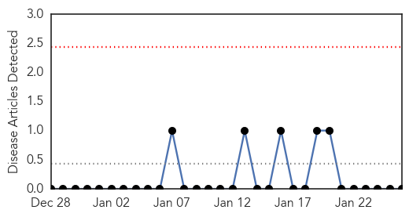

Measles
30-Day Web Trend
18 alerts, 3 warnings

30-Day Twitter Trend
1 alerts, 0 warnings

Article Locations

Article Confidences

Top Articles:
- 0.998
- Why the Disney linked measles outbreak is spreading
- 0.994
- Measles outbreak reaches East Bay
- 0.993
- 78 people now infected in U.S. measles outbreak - WLTZ 38
- 0.991
- KFVS12 News & Weather Cape Girardeau, Carbondale, Poplar Bluff
- 0.991
- Measles Not Confined to Unvaccinated
- 0.990
- California measles outbreak grows to 73 patients
- 0.990
- Measles Outbreak Puts Spotlight on Anti-Vaccine Movement
- 0.989
- 9 things everybody should know about measles
- 0.988
- 78 people now infected in U.S. measles outbreak
- 0.988
- WAFB 9 News Baton Rouge, Louisiana News, Weather, Sports
- 0.985
- Six more measles cases reported in California after Disneyland outbreak
- 0.982
- Should I vaccinate my children?
- 0.981
- CDC Guidelines On Getting Measles Vaccinations
- 0.980
- 78 people now infected in U.S. measles outbreak
- 0.980
- First measles case of 2015 - IronMountainDailyNews.com
- 0.963
- Suspected case of measles found in Sacramento
- 0.961
- Disneyland measles outbreak: Doctor: Measles vaccinations a must when protecting kids
- 0.958
- Measles outbreak casts spotlight on anti-vaccine movement
- 0.928
- Baltimore officials investigate possible measles case
- 0.907
- Measles vs. Influenza Dangers
- 0.898
- 30 babies under isolation as measles outbreak hits Bay Area
- 0.877
- Measles outbreak reaches Nevada; Washoe County Health Officials stress immunization
- 0.868
- Measles outbreak that began at Disneyland grows to 87 cases
- 0.867
- An Ignorance Outbreak. Measles Resurgence Blamed on Anti Vaccine Movement
- 0.855
- Flu And Measles Outbreaks Continue
- 0.851
- 3 stores in Milpitas, Gilroy warn customers of possible measles exposure
- 0.804
- The measles outbreak has made it to Michigan
- 0.786
- Forget ‘anti-vaxxers.’ The Disney measles outbreak could change the minds of an even more crucial group.
- 0.777
- Number of measles cases linked to Disneyland grows
- 0.776
- Royal Prince Alfred Hospital contacts hundreds of mothers after faulty fridge ruins vaccines
- 0.757
- Gilroy Costco says shoppers may have been exposed to measles
- 0.743
- Measles Panic Spreads at Bay Area Costco, Walmart
- 0.731
- Editorial: Preserve our 'herd immunity' to measles
- 0.731
- Health officials encourage vaccinations following confirmed measles case at Sioux Falls school
- 0.696
- Amid measles outbreak, some parents rethink shunning vaccines
- 0.694
- Vaccines A Major Health Concern As Measles Cases Rise
- 0.677
- Balto Health Officials Investigate Possible Measles Case
- 0.659
- Adults May Feel Impact Of Measles Outbreak
- 0.636
- 7 cases of suspected measles registered in Osh from 19 to 22 January :: Kabar
- 0.621
- When smart people make stupid decisions
- 0.600
- Vaccinate Millions More Children
- 0.576
- UAE foundation highlights plight of Pakistan's 'forgotten' flood victims
- 0.539
- Measles questions should go to family doctor, district says
Top Tweets:
- 0.527
- @WSJhealth who's talking about health implications 2 seniors never vaccinated infectious disease measles?Most at risk?
Mumps
30-Day Web Trend
0 alerts, 0 warnings

30-Day Twitter Trend
0 alerts, 0 warnings

Article Locations

Article Confidences

Top Articles:
-
No articles found for Jan 26, 2015
Top Tweets:
-
No tweets found for Jan 26, 2015